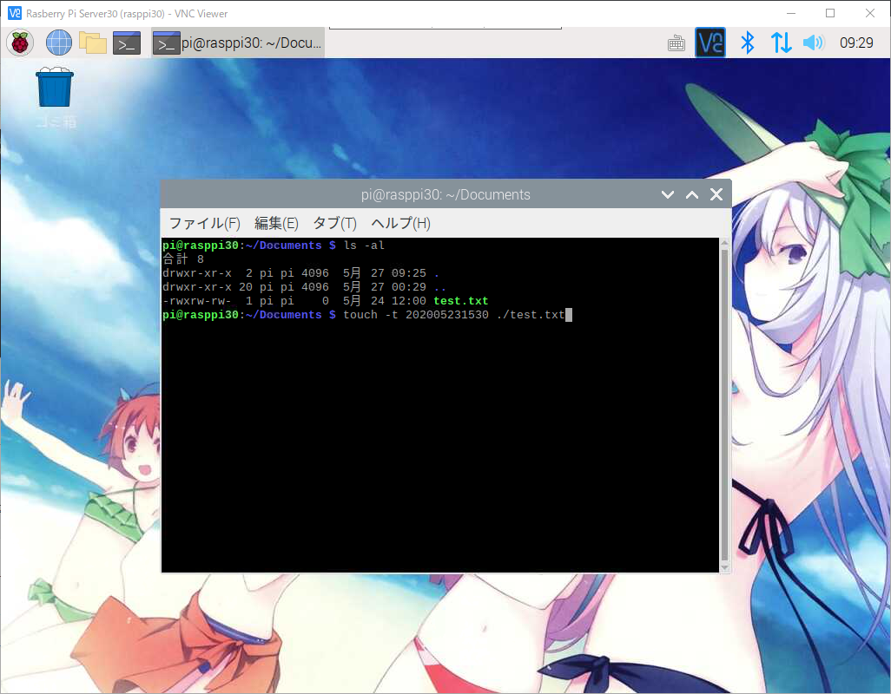
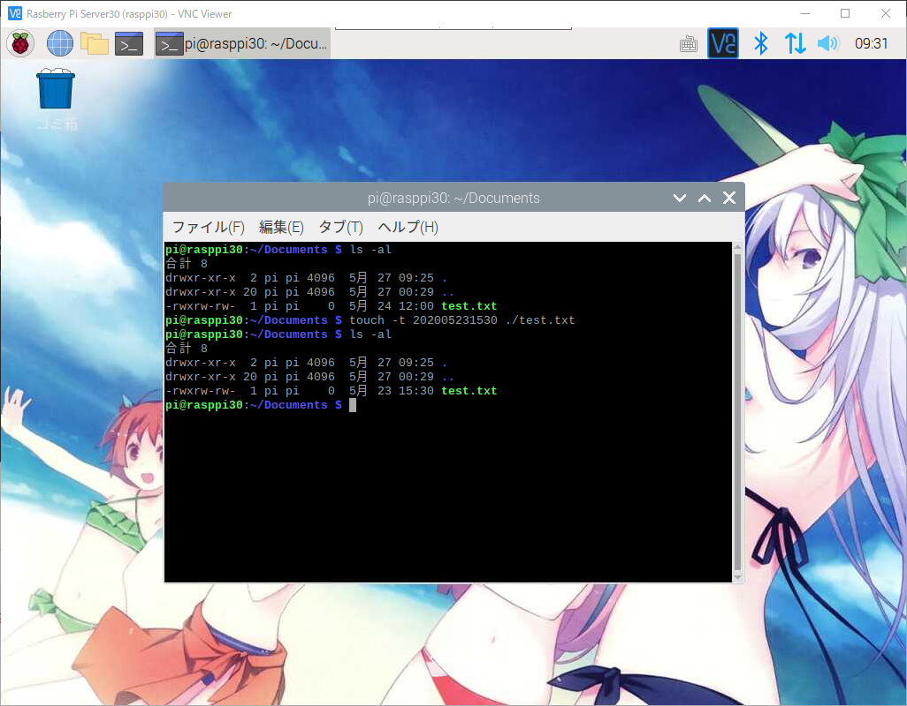

라즈베리파이 또는 리눅스에서 TOUCH를 이용해 날짜 변경하기
라즈베리파이 또는 리눅스에서 TOUCH를 이용해 날짜 변경하기
라즈베리파이 또는 리눅스상에서 파일을 업로드후 최신 날짜로 변경이 필요한 경우가 있습니다.
예를들어 자바 클래스 파일을 업로드 했는데 계속 예전에 올렸던 소스로 반영이 된다던지
그럴경우 날짜를 최신날자로 변경을 해주어야 최신소스로 인식을 하는 경우가 있습니다.
그럴경우 TOUCH명령어를 통해서 날짜를 자유롭게 변경하실수 있습니다.
1 | -rwxrw-rw- 1 pi pi 0 5月 24 12:00 test.txt |
위와같이 test.txt파일이 있으며 날짜는 5월24일로 설정이 되어있습니다.
TOUCH를 이용해 날짜를 5월23일로 변경을 해보도록 하겠습니다.
날짜 이외에도 시분초도 변경이 가능하니 5월23일 15시30초로 변경을 해보도록 하겠습니다.

1 | $ touch -t 202005231530 ./test.txt |
명령어를 치고 아래와같이 날짜와 시간이 변경된것을 확인하실수 있습니다.

1 | -rwxrw-rw- 1 pi pi 0 5月 23 15:30 test.txt |